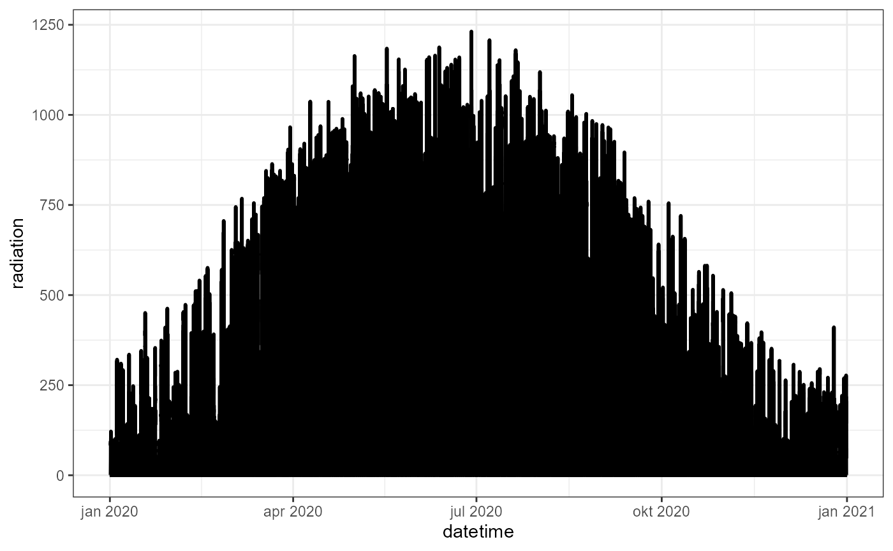
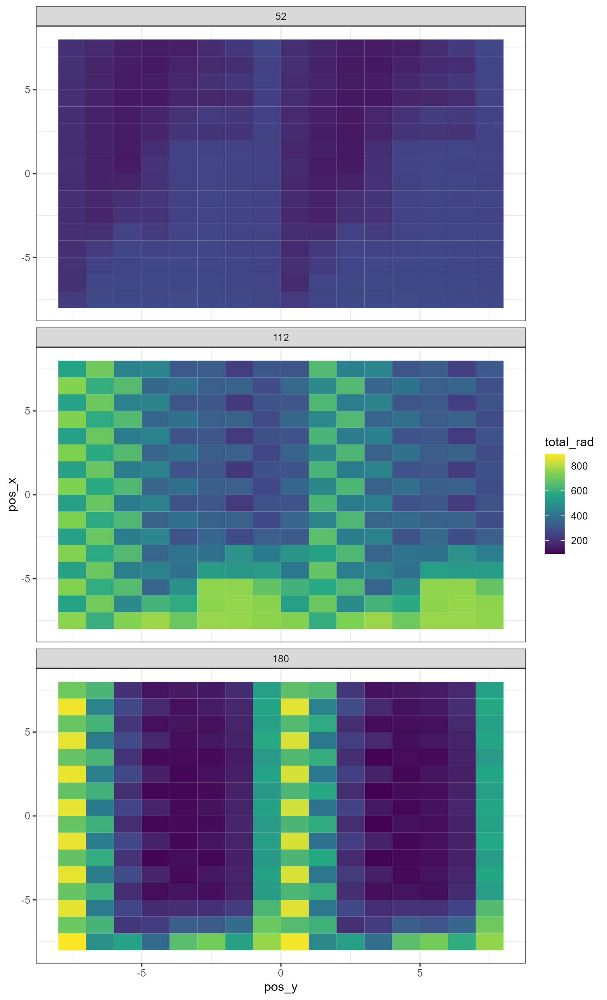

Example processing a time series
example-timeseries.RmdSet up a phenology file
In temperate deciduous tree species, trees do not bear leaves in
Winter, after which leaves appear in Spring, stay present all Summer,
and fall off in Autumn. The presence of leaves has an important impact
on the light interception by trees, and is therefore part of the 3-D
simulation tool available on https://agroforestry.ugent.be. The presence of leaves is
represented by a value between 0 and 1, where 0 corresponds to no
leaves, and 1 corresponds to a fully developed canopy. The extent of
canopy size can be adjusted using the Trees parameters
Leaf length, Leaf width,
Leaves per twig and Max twig radius. As the
extent of lea development changes over the season, we provide an option
to load a csv file with a time dependent leaf presence. We have
developed a simple function make_phenology_file() that for
now allows to generate a linear increase and decrease of leaf
presence, separated by a period of fully developed canopy:
library(tidyverse)
library(agroforlight)
make_phenology_file("phenology.csv", doy_start_flush = 135, doy_stop_flush = 150, doy_start_fall = 300, doy_stop_fall = 320)
phenology <- read_delim(file = "phenology.csv", col_names = F, delim = ",")
ggplot(phenology) +
theme_bw() +
geom_line(mapping = aes(x= 1:366, y=phenology$X1)) +
labs(x = "Day", y = "Leaf growth")Run the simulation with the phenology file
We can now import the phenology.csv file into the
application, choose the requested Time step (60 minutes in
this example) and press Calculate year. The calculation
progress will show as a progress bar on the orange panel:
This calculation took approximately 3 minutes (check if your browser uses your best GPU card) to complete and results in two files:
-
sunlight.csv: containing data from the direct source -
diffuse_light.csv: containing data from the diffuse sources
We will rename them as sunlight_tree.csv and
diffuse_light_tree.csv.
Run the simulation without the trees
Just like in the vignette("example-single"), we will run
a simulation of an empty scene with the same Geography
and Sensors settings and the same
Time step: We
rename the resulting csv files into sunlight_ref.csv and
diffuse_light_ref.csv.
Convert the data
To convert the data output to actual light intensities, we now need a time series of radiation measurements. In this example, we have data at a ten min interval for an entire year 2020:
ggplot(example_data) +
theme_bw() +
geom_line(mapping = aes(x=datetime, y=radiation), linewidth = 1.0)
converted_data <- convert_afl_ts(treescene_dir_file = "sunlight_tree.csv",
treescene_diff_file = "diffuse_light_tree.csv",
datetime = example_data$datetime, globrad = example_data$radiation,
lat = 50.9, lon = 3.78,
sensor_size = 1, inclination = 0, rotation = 0)
head(converted_data)
#> # A tidytable: 6 × 6
#> datetime diffuse_rad direct_rad pos_x pos_y total_rad
#> <dttm> <dbl> <dbl> <dbl> <dbl> <dbl>
#> 1 2019-12-31 22:48:41 0 0 -7.5 -7.5 0
#> 2 2019-12-31 23:49:16 0 0 -7.5 -7.5 0
#> 3 2020-01-01 00:49:16 0 0 -7.5 -7.5 0
#> 4 2020-01-01 01:49:16 0 0 -7.5 -7.5 0
#> 5 2020-01-01 02:49:16 0 0 -7.5 -7.5 0
#> 6 2020-01-01 03:49:16 0 0 -7.5 -7.5 0Aggregate and visualize
Light distribution pattern for three time points during the year:
- around noon on 21 February (doy = 52)
- around noon on 21 April (doy = 112)
- around noon on 28 June (doy = 180)
converted_data %>%
# filter(between(pos_x, -3.5, 3.5)) %>%
mutate(doy = yday(datetime)) %>%
filter(doy %in% c(52, 112, 180)) %>%
filter(hour(datetime) == 13) %>%
ggplot() +
theme_bw() +
facet_wrap(facets = vars(doy), nrow = 3) +
geom_tile(aes(x= pos_y, y=pos_x, fill = total_rad)) +
scale_fill_viridis_c()
Remove edge effects:
filter(between(pos_x, -1.5, 1.5))
converted_data %>%
filter(between(pos_x, -1.5, 1.5)) %>%
mutate(doy = yday(datetime)) %>%
filter(between(datetime, as_datetime("2020-06-28 09:00:00"), as_datetime("2020-06-28 14:00:00")), between(pos_y, -8, 0)) %>%
group_by(pos_y, datetime) %>%
reframe(total_rad = mean(total_rad)) %>%
ggplot() +
theme_bw() +
geom_line(aes(x= pos_y, y=total_rad, color = as.factor(datetime), group = as.factor(datetime)), linewidth = 1)+
scale_fill_viridis_d() +
theme(legend.position = 'top')